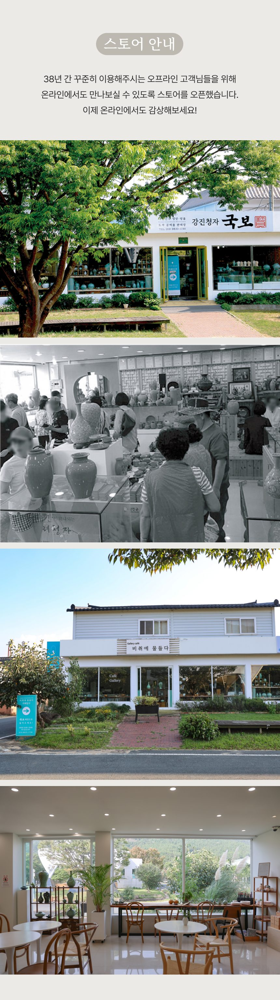

온라인 구매는 네이버 스마트스토어가 공식 채널입니다
단체 주문 · 기업 선물 · 긴급 배송 문의 (일요일 휴무)
전라남도 강진군 대구면 청자촌길 20-16 (고려청자박물관 앞) — 갤러리 카페 「비취에 물들다」
마음에 드는 청자 잔을 직접 골라 음료를 드시고 그 잔을 그대로 가져가는 '거시기 청자' 체험도 갤러리카페에서 만나실 수 있습니다.
20-16 Cheongjachon-gil, Daegu-myeon, Gangjin-gun, Jeollanam-do, Korea
